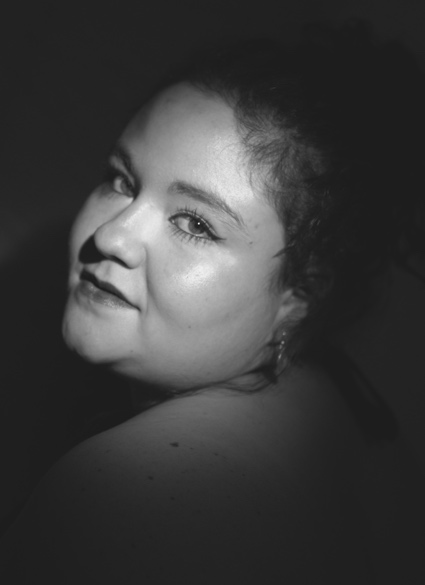
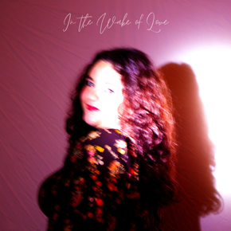

About

French-Australian artist KYRA is a Melbourne-based singer, songwriter, and musician whose artistry lives at the intersection of jazz warmth, soulful introspection, and indie authenticity. Her music explores the complexities of emotions, relationships, and self-growth, transforming personal experiences into songs that resonate deeply. Inspired by artists like Amy Winehouse, Alicia Keys, Gigi Perez, and Adele, KYRA's sound is intimate and emotionally rich, with lyrics that read like diary entries and melodies that linger long after the last note.
In 2019, she joined her first official band, Controlled Chaos, recording and releasing their debut single 'Burnt' in 2021, followed by 3 more in singles in the following years. The band began gaining recognition after performing at large- scale events such as GarageBand at Federation Square (2022) and Twilight Sounds Festival (2023), where they opened for Mahalia Barnes & The SoulMates before a crowd of over 5,000 people.
After years of collaboration, KYRA is now carving out her own solo identity, combining her jazz and soul roots with a contemporary indie edge. Her live studio album captures her evolution as an artist, weaving together stories of love, reflection, and resilience with the warmth and honesty that define her sound.
In the Wake of Love
KYRA's debut album, 'In the Wake of Love', is an 8-song album that captures the complexity of love, growth, and human emotion. Recorded live in studio with a four-piece band, the album blends rich instrumentation with KYRA's warm, expressive vocals, creating a sound that is both personal and cinematic. The album's narrative arcs through change, self-discovery, and love, offering listeners an intimate journey from start to finish.
